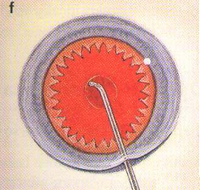

Capsulotomy
* Định nghĩa:
+ Mở bao, rạch bao. Rạch bao trước được thực hiện trong phẫu thuật lấy thể thủy tinh ngoài bao (Anterior Capsulotomy). Những vết rạch được thực hiện bằng kim phá bao (Cystotome) vòng theo ngoại vi của thể thủy tinh dạng đường cong không đều (được gọi là Mở bao kiểu mở nắp hộp = Can - Open Capsulotomy). Thủ thuật này cũng được thực hiện với bao sau khi bao sau bị đục để phục hồi lại thị lực.

Hình: Minh họa việc rạch bao sau theo kiểu Can-Open